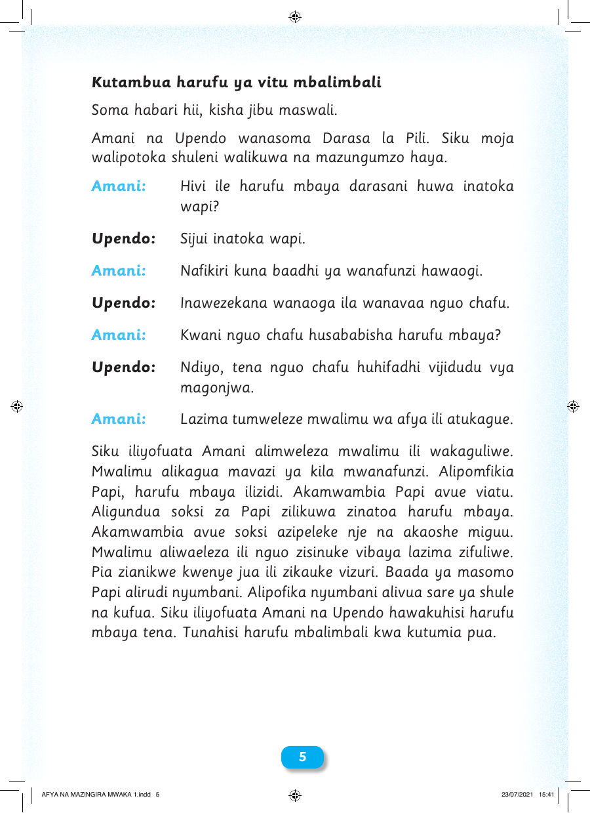

Kutambua harufu ya vitu mbalimbali Soma habari hii, kisha jibu maswali. Amani na Upendo wanasoma Darasa la Pili. Siku moja walipotoka shuleni walikuwa na mazungumzo haya. Amani: Hivi ile harufu mbaya darasani huwa inatoka wapi? Upendo: Sijui inatoka wapi. Amani: Nafikiri kuna baadhi ya wanafunzi hawaogi. Upendo: Inawezekana wanaoga ila wanavaa nguo chafu. Amani: Kwani nguo chafu husababisha harufu mbaya? Upendo: Ndiyo, tena nguo chafu huhifadhi vijidudu vya magonjwa. Amani: Lazima tumweleze mwalimu wa afya ili atukague. Siku iliyofuata Amani alimweleza mwalimu ili wakaguliwe. Mwalimu alikagua mavazi ya kila mwanafunzi. Alipomfikia Papi, harufu mbaya ilizidi. Akamwambia Papi avue viatu. Aligundua soksi za Papi zilikuwa zinatoa harufu mbaya. Akamwambia avue soksi azipeleke nje na akaoshe miguu. Mwalimu aliwaeleza ili nguo zisinuke vibaya lazima zifuliwe. Pia zianikwe kwenye jua ili zikauke vizuri. Baada ya masomo Papi alirudi nyumbani. Alipofika nyumbani alivua sare ya shule na kufua. Siku iliyofuata Amani na Upendo hawakuhisi harufu mbaya tena. Tunahisi harufu mbalimbali kwa kutumia pua. 55 AFYA NA MAZINGIRA MWAKA 1.indd 5 23/07/2021 15:41